Instalar em modo Docker
A instalação completa em modo Docker, num Ubuntu 24.04 acabado de instalar: o instalador põe o Docker, o assistente configura a aplicação e o docker compose arranca tudo em contentores.
Nesta página instalamos o SecVision em modo Docker, outra vez numa máquina Ubuntu 24.04 acabada de instalar. É o modo que o instalador propõe por omissão. Se já leu a página do modo nativo, vai reconhecer muitas perguntas: o assistente é o mesmo. Tal como esse, foi gravado numa máquina de laboratório; no seu servidor, os passos são os mesmos.
O que muda
No modo Docker, cada peça do SecVision corre num contentor próprio: a base de dados, a aplicação, o servidor das páginas e o Presidio. Por isso não se instalam no sistema nem a MariaDB, nem o nginx, nem o PM2.
Quem as junta é o Docker Compose: arranca as quatro peças pela ordem certa e volta a arrancá-las sozinho se o servidor reiniciar.
O que muda no modo Docker
Cada peça corre no seu contentor: a base de dados, a aplicação, as páginas e o Presidio.
Não se instalam no sistema a MariaDB, o nginx nem o PM2 — vêm dentro dos contentores.
O Docker Compose arranca as quatro peças juntas, pela ordem certa, e volta a arrancá-las se o servidor reiniciar.
Obter o código
Começamos por confirmar o ponto de partida: perguntamos a versão do Docker, e o sistema responde que o comando não existe. Esta máquina não tem Docker nenhum — é o instalador que o vai pôr.
Escreva:
docker --version
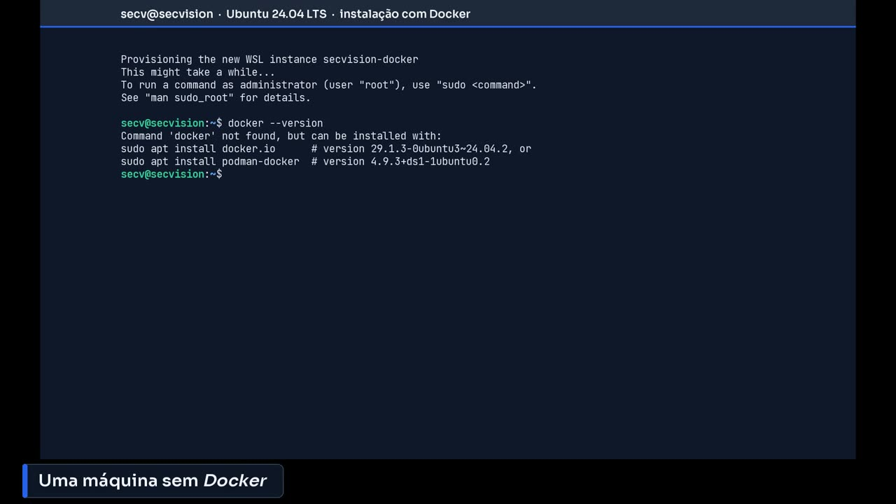
Uma máquina sem Docker.
Trazemos o código para o servidor com git clone, como no modo nativo, e entramos na pasta secvision.
Escreva:
git clone <endereço-do-repositório> secvision
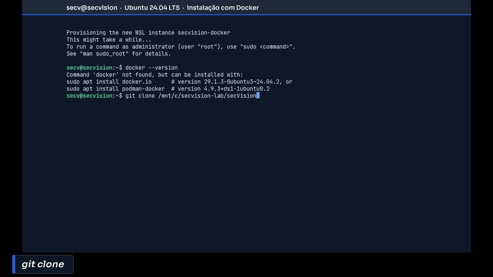
Git clone.
O instalador
Corremos o instalador com bash setup.sh. Pede a palavra-passe do sudo, porque vai instalar programas no sistema. Escrevemos a do nosso utilizador — sem nada a aparecer no ecrã — e Enter.
Escreva:
bash setup.sh
O que se respondeu a cada pergunta do instalador nesta instalação:
Pergunta do instalador |
Resposta |
|---|---|
[sudo] password for secv |
(a palavra-passe do seu utilizador) |
Opção [1/2] |
|
Password root do MySQL |
(a palavra-passe root da base de dados que escolher) |
Confirme a password root |
(a palavra-passe root da base de dados que escolher) |
Utilizador da aplicação |
Enter (aceita o valor proposto) |
Password da aplicação |
(a palavra-passe da aplicação que escolher) |
Confirme a password da aplicação |
(a palavra-passe da aplicação que escolher) |
Mostrar segredos |
|
WebAuthn RP Name |
|
Domínio / RP ID |
|
Origin URL completo |
Enter (aceita o valor proposto) |
Porto de acesso à aplicação |
|
Corrigir Origin |
|
Tamanho máximo de upload |
Enter (aceita o valor proposto) |
Confirmar substituição do .env |
|
Gravar .env e continuar |
|
Prima Enter |
Enter (aceita o valor proposto) |
(S/n) |
|
(s/N) |
|
Modo de instalação |
|
Passo 1/4 |
|
base Docker desta máquina não é a aprovada |
|
Instalar a base Docker aprovada |
|
Base Docker aprovada |
|
Instalar Node.js 22 |
|
Configuração segura da aplicação |
|
Configuração da Base de Dados |
|
Segredos de Segurança |
|
Configuração da Aplicação |
|
Revisão e Confirmação |
|
Construção e lançamento |
|
Contentores iniciados |
|
A aguardar que a API responda |
|
API a responder |
|
A criar utilizador administrador |
|
Instalação concluída |
|
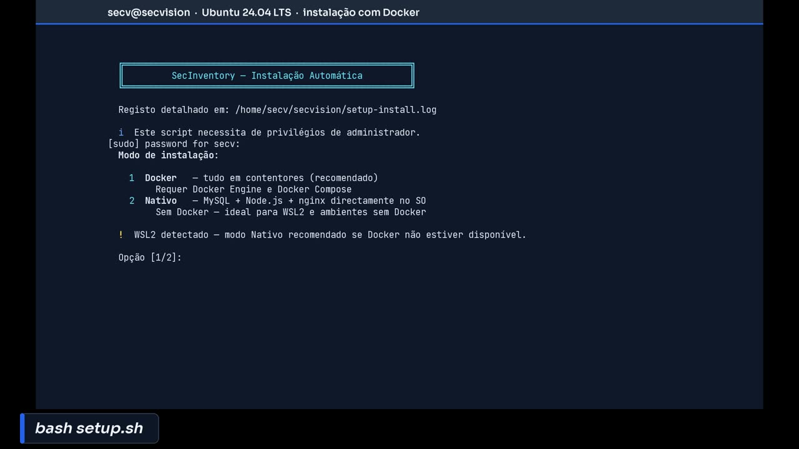
Bash setup.sh.
No menu do modo de instalação, escrevemos um: Docker. É também o que fica se carregar só em Enter.
O instalador repara que está num WSL e lembra que, aí, o modo nativo é uma alternativa. Num servidor Linux normal esta nota não aparece.
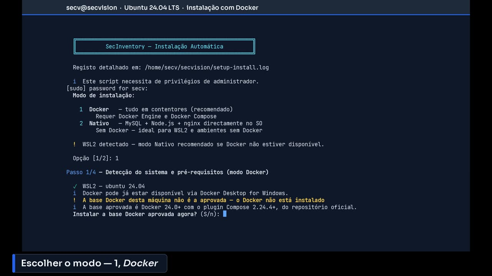
Escolher o modo — 1, Docker.
O instalador verifica o Docker e conclui que falta. Explica qual é a base aprovada — o Docker 24 ou mais recente, com o plugin Compose, do repositório oficial — e pede autorização para a instalar. Respondemos que sim.
Numa máquina que já tivesse o Docker da distribuição, sem o Compose, o instalador também o trocaria — mas só depois de fazer uma cópia de segurança. Aqui não há nada para copiar, e ele di-lo. No fim, volta a medir: Docker e Compose nas versões aprovadas.
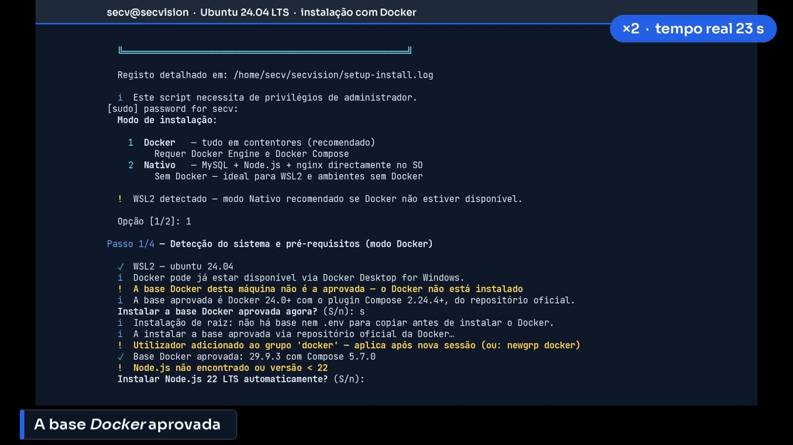
A base Docker aprovada.
O assistente de configuração
A seguir instala o Node.js 22, de que o assistente de configuração precisa, e lança o assistente. Primeiro confirma os pré-requisitos: o Node.js, o Docker, o daemon a correr e o Compose.
Repare no aviso: a porta 80 está ocupada nesta máquina. Não é um erro — o assistente vai propor outra porta mais à frente.
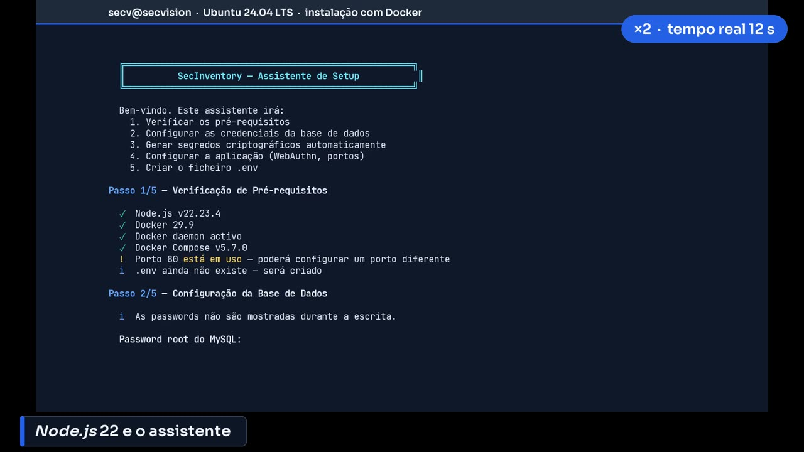
Node.js 22 e o assistente.
A base de dados: a palavra-passe do administrador, duas vezes, e a da aplicação, também duas vezes, com pelo menos doze caracteres. Para o nome do utilizador da aplicação, aceitamos o que propõe com Enter.
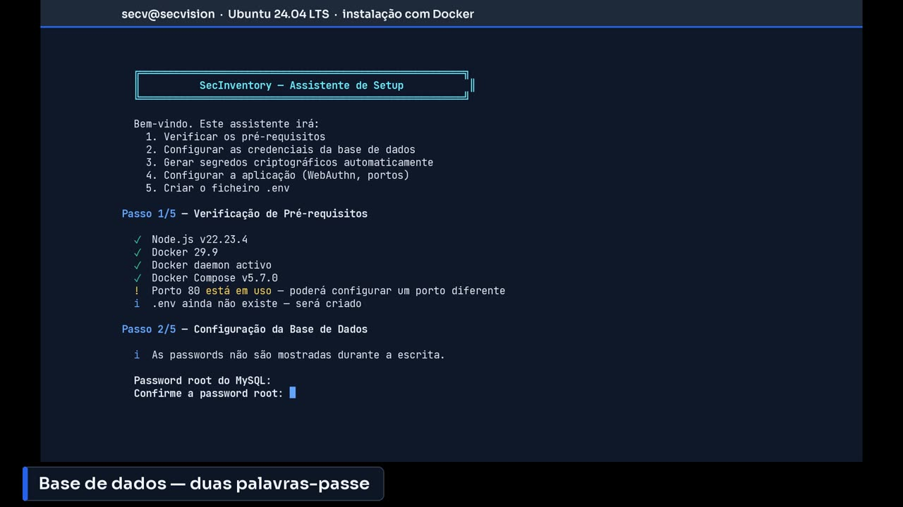
Base de dados — duas palavras-passe.
Os segredos de segurança são gerados ao acaso pelo próprio assistente. Não os queremos ver no ecrã: respondemos que não.
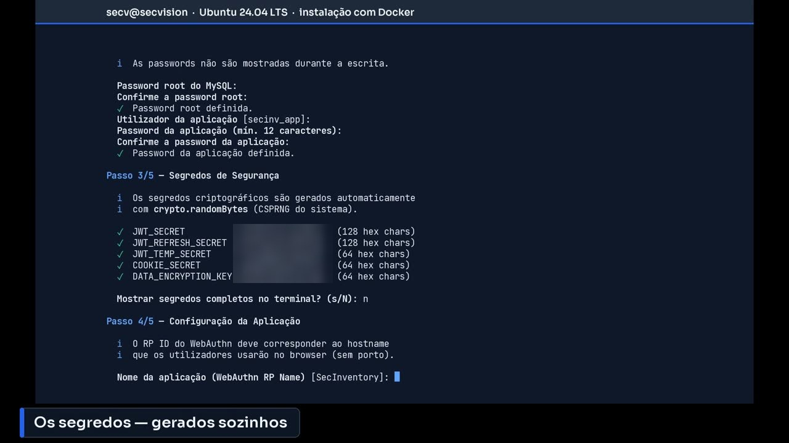
Os segredos — gerados sozinhos.
O nome da aplicação, SecVision, e o endereço pelo qual o browser vai chegar: localhost, nesta máquina de laboratório. A porta: 8080, já que a 80 está ocupada.
No modo Docker, o assistente escreve esta porta também no ficheiro do Docker Compose, para o contentor das páginas ficar à escuta na porta certa.
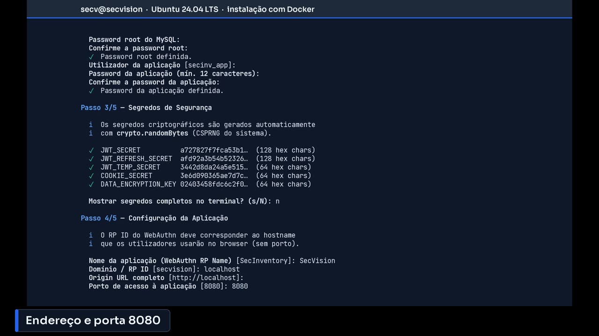
Endereço e porta 8080.
O resumo do que vai gravar. Confirmamos, e o ficheiro de configuração fica escrito.
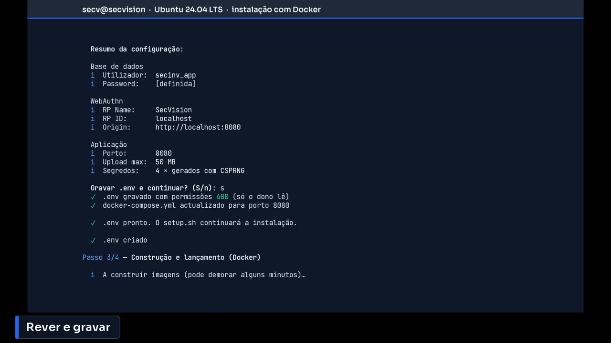
Rever e gravar.
Construir e arrancar
Agora o Docker Compose constrói as imagens — uma espécie de molde de cada contentor — e descarrega o que falta: a base de dados, o Node.js, o modelo de língua portuguesa do Presidio. É a espera mais longa.
Se o Docker Compose falhasse aqui, o instalador parava logo e mostrava as últimas linhas do registo. Esta gravação foi, aliás, a que ajudou a corrigir isso.
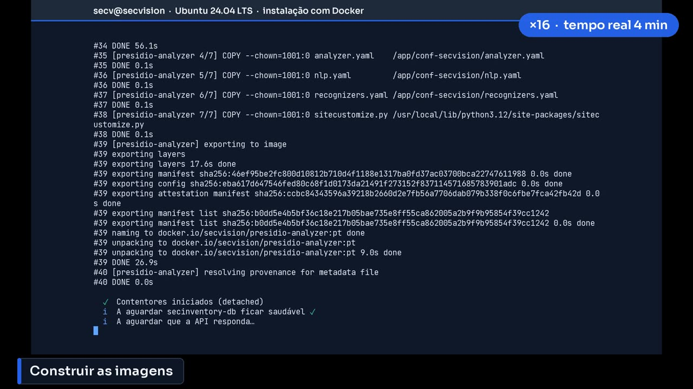
Construir as imagens.
Os contentores arrancaram. O instalador espera que a base de dados fique saudável e pergunta à própria aplicação se responde. Só depois cria a conta de administrador inicial.
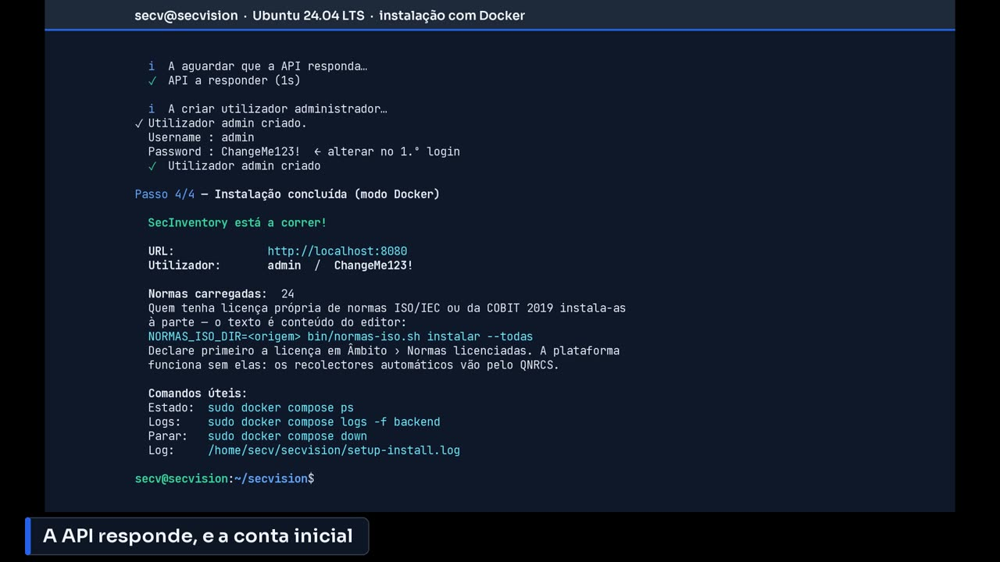
A API responde, e a conta inicial.
Confirmar
Instalação concluída. O endereço, localhost na porta 8080, e a conta inicial: admin, com a palavra-passe ChangeMe123!. As mesmas vinte e quatro normas do modo nativo.
Repare nos comandos úteis no fim: começam por sudo. O nosso utilizador entrou no grupo do Docker, mas isso só conta a partir da próxima sessão. Até lá, é com sudo.
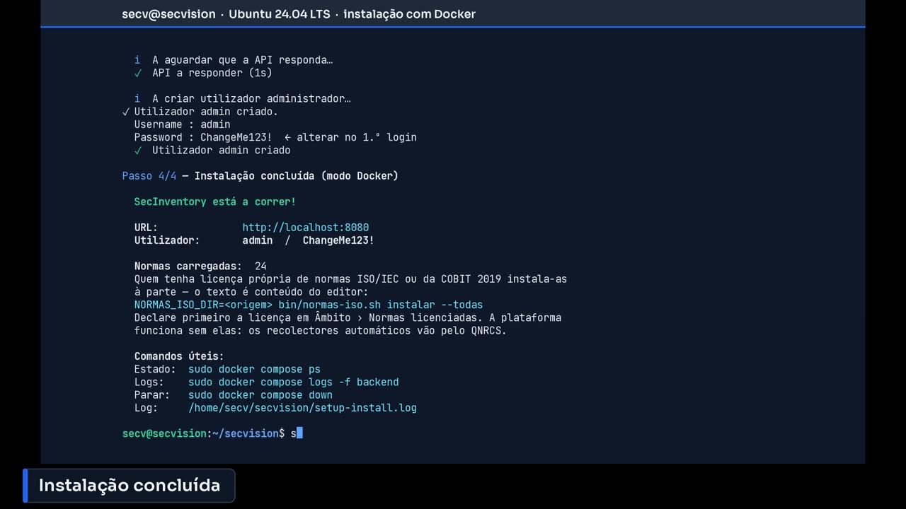
Instalação concluída.
Confirmamos com sudo docker compose ps: quatro contentores, todos a correr. A base de dados e o Presidio dizem healthy — passaram a sua própria verificação de saúde.
Escreva:
sudo docker compose ps
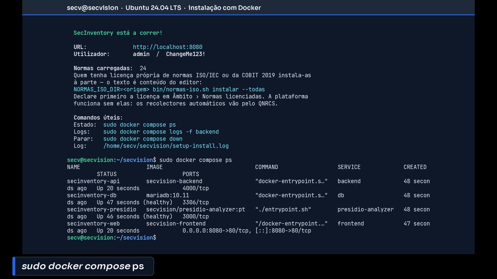
Sudo docker compose ps.
E perguntamos à aplicação, pela porta 8080, se está bem: responde status ok, em ambiente de produção. A instalação em modo Docker está feita e confirmada.
Escreva:
curl -s http://localhost:8080/api/health; echo
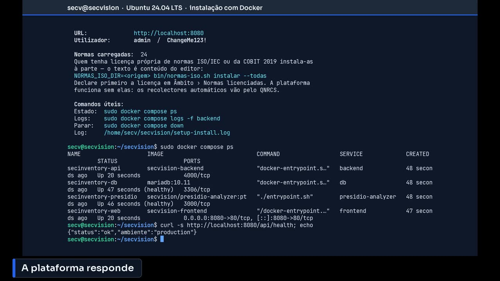
A plataforma responde.
Resumo
Três comandos para guardar, sempre dentro da pasta do SecVision. O ps mostra que contentores estão a correr. O logs mostra o que a aplicação está a dizer — é por aí que se começa quando algo não abre. E o down e o up param e voltam a arrancar tudo.
Comandos para guardar
sudo docker compose ps — que contentores estão a correr
sudo docker compose logs -f backend — o que a aplicação está a dizer
sudo docker compose down e up -d — parar e voltar a arrancar tudo